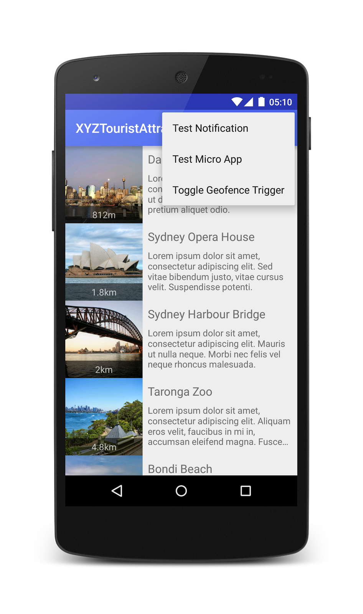
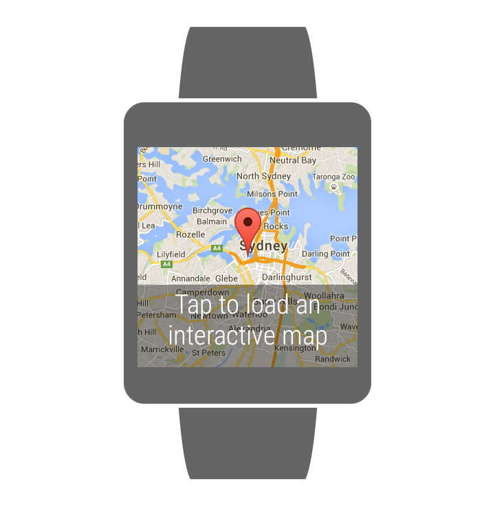

In this codelab, you’ll learn how to update an existing Android Wear app to include a wearable map. You’ll get a chance to run the app and explore some of the options for embedding maps into your wearable device.
The app we’ll be using is the “XYZ Tourist Attractions” app, which you may have seen before as an Android Wear code-lab. If you want to dive deep into developing for Android Wear, then make sure you check out the project. It’s on GitHub.
What you’ll learn
- Updating an Android Wear app to include a Google Map
- Using a “Lite mode” map to generate a quick, almost-static map
- How to display multiple maps in a wearable app
- A few handy shortcuts within Android Studio to help your day-to-day development
What you’ll need
- Android Studio version 1.0+
- The sample code
- A test device with Android 4.1+
- A test Android Wear device
How will you use use this tutorial?
How would rate your experience with building Android apps?
Have you ever built an Android Wear app?
You can either download all the sample code to your computer...
...or clone the GitHub repository from the command line.
$ git clone https://github.com/googlesamples/io2015-codelabs.git
First, let’s see what the app looks like before we add a map. With the code downloaded, the following instructions describe how to open the XYZ Tourist Attractions app in Android Studio.
- From the Android Studio Quick Start screen, click Import Project (or if Android Studio is open, File - New - Import Project).
- Browse to the unzipped code, or the location of the repository you have checked out, it should be

android-XYZTouristAttractions. Make sure you select the folder. - Enable USB debugging on your Android device.
- Now plug in your Android phone/tablet, set the build configuration to Application (it’s the drop-down box, not the Android Device Monitor, which has the same icon) and click the
 Run button. You should see the app launch on your device after a few seconds.
Run button. You should see the app launch on your device after a few seconds.
Frequently Asked Questions
In order to push wearable apps to the wearable device and debug them, they need to be connected to the development machine. This can be done over Bluetooth using a phone, or by connecting the wearable device directly to the development machine with a USB cable.
If you’re working on this at the code lab booth here at Google I/O, then the wearable devices will already be set up and ready to use. If you’re working on this using your own devices, then you’ll need to follow these instructions over in the Android docs.
Once you’ve got debugging set up, follow these steps.
1. Switch the build configuration to Wearable and press the Run button.
2. Watch the build process and confirm that the app has been deployed to the watch. In the latest version of Android Wear, you will see a card indicating that the app was installed, but on earlier versions you will not see anything yet.
3. Now load the XYZTouristAttractions app on the phone or tablet, open the options menu, choose Test Micro App and tap OK.

4. Check the watch for the new card. As it mentioned in the previous dialog, the priority is set to the default, so you may need to scroll down through the cards and you may need to wait at least 20 seconds for the image data to transfer.
5. On the watch, with the XYZ card open, swipe left and tap Explore.
6. Page through (swipe left/right and up/down) the screens and take a look around. This row/column layout is powered by a GridPagerAdapter. We’ll be adding a new column later in this lab.

Now let’s write some code! We’ll add a map with an overlay explaining to the user that they should tap to load an interactive map.
Here are the steps we’ll be taking:
- We’ll add our key and permissions to the application’s manifest.
- We’ll create a new layout for the map “page”
- As we’ll be using MapFragment, we’ll need a FragmentManager. This means we’ll need to upgrade our stored Context to an Activity.
- We’ll add a new column to the grid pager, containing the map
- We’ll add a marker to the map.
- We’ll add the overlay, even though it won’t do anything yet.
Adding permissions and a key
To add the permissions, open up AndroidManifest.xml in the Wearable project and add the following lines under the <manifest> block, after the <uses-feature> line.
AndroidManifest.xml
And add the following line within the <application> block.
AndroidManifest.xml
To get an API key, click here and follow the prompts to log in and create or select a project. When you reach the “Edit allowed Android applications” prompt, leave the box empty and just click Create.
Take note of the text next to API key - we’ll need that in a second.
Back in Android Studio, we want to add the API key as a string resource. Under the Wearable project, navigate to res/values and open strings.xml. Add a new line after the other <string../> lines:
strings.xml
You will need to add your API key here! Replace YOUR_API_KEY_HERE with the API key you created a moment ago. It will be a long string of characters that begins with “AIza…”.
Creating a new layout for the Map page
1. Under the Wearable project, navigate to res/layout, right click on layout and choose New - Layout resource file.
a. Set the File name to gridpager_map.xml
b. Set the Root element to FrameLayout
c. Click OK
2. Switch to text editing by clicking the Text tab at the bottom of the editing area.
3. Paste this code, totally replacing the contents of the existing file.
gridpager_map.xml
Upgrade the Context to an Activity
In this step we’re just using Android Studio’s built in refactoring tools to rename and change the type of a variable.
1. Open the AttractionsGridPagerAdapter class (it’s under the Wearable project, in java/com/example/android/xyztouristattractions/ui)
2. Find where the mContext field is declared, it will be near the top of the file and look like private Context mContext;
3. To rename the variable, right-click on mContext, and choose Refactor - Rename, type mActivity and press Enter to make the change.
4. Now right-click on the type (Context) and choose Refactor - Type Migration. Type Activity into the type field and press Refactor. The line should now read private Activity mActivity;)
5. Finally, rename the context argument in the constructor to activity.
6. A few lines down, check that the constructor has been updated, it should look like this.
AttractionsGridPagerAdapter.java
Add a new column to the grid layout
The grid-based layout is configured to present a row for each attraction and displays information and actions in each column (e.g. photo, distance, start walking navigation). We’ll replace the secondary image (distance) column with a map column.
1. While still in the AttractionsGridPagerAdapter class, scroll to the top of the file, looking for the private constants prefixed with PAGER_.
2. Rename PAGER_SECONDARY_IMAGE_COLUMN to PAGER_MAP_COLUMN using Android Studio’s rename tool (right-click on the variable, Refactor, Rename). The list of pager variables should look something like this.
AttractionsGridPagerAdapter.java
3. We’ll need to keep a reference to the GoogleMap object and the layout that holds it, so add these two lines below.
AttractionsGridPagerAdapter.java
4. Scroll down and find the method instantiateItem(..). You can see in the switch block that this is where each page is created.
5. We’ll need to remove PAGER_MAP_COLUMN from the first block and create a new block to handle the map. The code will need to inflate the layout we defined above, add it to the container provided and initialise the map. Here’s the code for the updated first and second statements - we’ll put in a couple of function placeholders that we’ll code up in the next step.
AttractionsGridPagerAdapter.java
6. To make sure we only have one copy of the map, we’ll need to exclude it from being cleaned up in the destroyItem method. Update it to look like this:
AttractionsGridPagerAdapter.java
Add a marker to the map
In the last step we used two placeholder functions, getMapReadyCallback and updateMapLocation. Paste the following code into the class to add them, alongside the other private methods (e.g. right before private void startAction(..)):
AttractionsGridPagerAdapter.java
Add the overlay text
To make sure your users know about the sweet interactive map you’re about to give them, let’s add some text to the overlay. Open up gridpager_map.xml again, and add an android:text attribute to the existing TextView like so.
gridpager_map.xml
Android Studio will indicate that the @string you just used does not exist. Let’s fix this.
- Click on the text you added and press Alt-Enter to bring up the suggested fixes
- Choose “Create string value resource ‘map_control_hint’”
- When prompted, enter the text “Tap to load an interactive map” (no quotes) into the Resource value field
- Click OK!
Phew! Let’s check out the project so far.
- Make sure your wearable device is still plugged in
- Set the build configuration to Wearable and click the Run button
- Open up the phone running the main XYZTouristAttractions application, choose Test Micro App from the options menu and tap OK
- Check the watch for the tourist attractions card, swipe left and press Explore
- When the app loads you should be able to swipe through the cards and see the map on the 2nd column of each row.
Nice work! Depending on how you want to use Google Maps in your wearable app, this may be as far as you need to go. In the next steps we’ll load up a more rich, interactive map on the watch.
Now let’s add a full map to the app, so our users can pan and zoom.
1. Let’s write our new Activity first. Create a new class, MapActivity (under the Wearable project, in com.example.android.xyztouristattractions.ui)
2. Paste in this code and take a minute to read it through. This activity has a few features:
a. It uses DismissOverlayView to indicate that the user should long-press to exit
b. It loads the Attraction in as an extra bundled with the intent
c. And it sets up the map with a marker based on the provided attraction
MapActivity.java
You should have 3 errors that need to be corrected, let’s fix them now.
4. First, create the missing layout (this will fix 2 of the errors).
a. Scroll to the line in onCreate that reads setContentView(R.layout.activity_map)
b. Click on the red text (activity_map) press Alt-Enter (alternatively, use the right light bulb that appears in the left gutter) and choose Create layout resource file activity_map.xml
c. Leave the default settings, just click OK
d. Android Studio will give you a placeholder design for free, but we’re going to delete it all and replace it with this code.
activity_map.xml
5. Now create the missing constant
a. Scroll to the error, it’s the line that reads:
mAttraction = getIntent().getParcelableExtra(Constants.EXTRA_ATTRACTION);
b. Click on the red text (EXTRA_ATTRACTION) press Alt-Enter (alternatively, use the right light bulb that appears in the left gutter) and choose Create constant field ‘EXTRA_ATTRACTION’
c. Constants.java should now be displayed, with the cursor on a new line that looks like this.
public static final String EXTRA_ATTRACTION = ;
d. Press Enter to accept String as the correct type (the red outline around String should now disappear)
e. When the cursor moves to the end of the line, type “extra_attraction” (with quotes) and press Enter to dismiss the red outline. The line should now look like this.
public static final String EXTRA_ATTRACTION = "extra_attraction";
f. This is enough, but the new line belongs further down the file. Cut and paste the line (or use Command/Ctrl-Shift-↓) to move it below the comment “// Intent and bundle extras”
6. Before this Activity can be referenced, we need to declare it in the manifest. Open up AndroidManifest.xml from the Wearable project and add this line inside the <application> block.
AndroidManifest.xml
7. In order to get the information about the tourist attraction that we want to highlight, we have send it as a Parcelable extra through the intent that starts this activity. However, the Attraction class does not implement the Parcelable interface. Let’s fix that.
a. There are a number of tools that can do this for you automatically, including http://www.parcelabler.com/. Feel free to use a tool to do this, or simply replace the existing code with the code below.
b. Here’s the updated code for Attractions.java, found in the Shared project under java/com/example/android/xyztouristattractions/common.
Attraction.java
8. Now we just need to wire up the tap event from our lite-mode map to launch the full map!
a. Open the AttractionsGridPagerAdapter class and find the method getMapReadyCallback(..) that we created earlier.
b. Add an OnClickListener to the GoogleMap that launches the MapActivity. Your finished method should look like this:
AttractionsGridPagerAdapter.java
Now that it’s all finished, let’s run the app again to see how it looks.
- Make sure your wearable device is still plugged in
- Set the build configuration to Wearable and click the Run button
- Open up the phone running the main XYZTouristAttractions application, choose Test Micro App from the options menu and tap OK
- Check the watch for the tourist attractions card, swipe left and press Explore
- When the app loads you should be able to swipe through the cards and see the map on the 2nd column of each row.
- As the text states, you should now be able to tap to load your interactive map and then you can long press to exit.
Your app is now mapped!
What we've covered
- Re-using a Lite-mode map for multiple pages in a grid pager
- Adding and centering a marker on the map
- Tapping through to a full, zoomable and pannable map
Next Steps
- Add a map to your app!
- Try opening the marker’s info window by default, and adding some other data, such as the distance
- Try and use data from the Directions API to draw a Polyline on the map between the user and the tourist attraction
If you would like to find out more about the Android Maps API please see the full developer documentation.